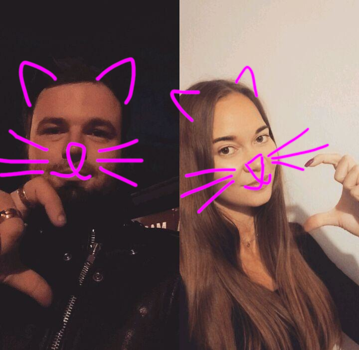

Дорога Яся!
Я пишу це, поки ти спиш, а ти зараз читаєш це, поки сплю я.
Я такий вдячний тобі за те, що ти в мене є.
Я хочу тебе привітати з твоїм 19-річчям. Число - це хуїта. Головне - те, якими ми почуваємося морально. Якщо ми щасливі, то ніякі цифри, числа, люди, місця, ситуації та обставини не матимуть над нами жодної влади.
Я неймовірно радий, що моя доля звела мене з такою дбайливою, щирою і доброю кицьою.
Я радію, що ти в мене є, і я намагатимусь зробити все, щоб ти була в мене найщасливішою котічкою на світі.
Я тебе дуже сильно люблю.
П.С. Якщо ти б хотіла замінити мій подарунок на щось інше - не соромся і скажи, я не ображуся. Я вибрав те, що мені сподобалося, але мені важливіше, щоб це подобалося тобі. Я анітрохи не ображуся.
П.П.С. Пробач, що ти мене зараз будитимеш, а я ніяк не прокидатимусь. Я вранці такий тупий овоч, що ну нафіг.
